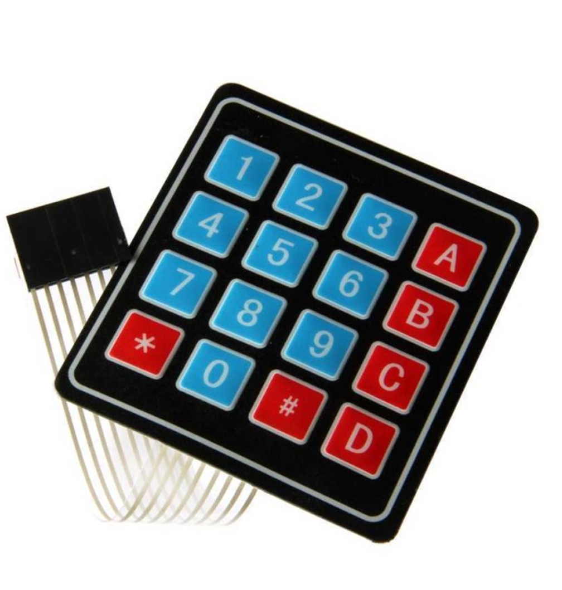

A matrix keypad (input number)
LDR Photoresistor ,it is like a resistor but change base on light intensity.
Ultrasonic sensor ,it detect anything infront.
PIR Motion Sensor ,detec any change in infrared radiation
DHT Sensor ,measures temperature and humidity
Potentiometer ,adjustable resistance (change by turning its knob)
LED ,it lights up
NEOpixels adjuctable light colour (red,blue and green)
DC Motor, rotate things
Stepper Motor ,it turn precise but slowly
Servo motor able to rotate actually, speed of turn is also adjustable
LCD Display ,display anyword and number base of what it program to show.
Speaker ,makes sound base on program